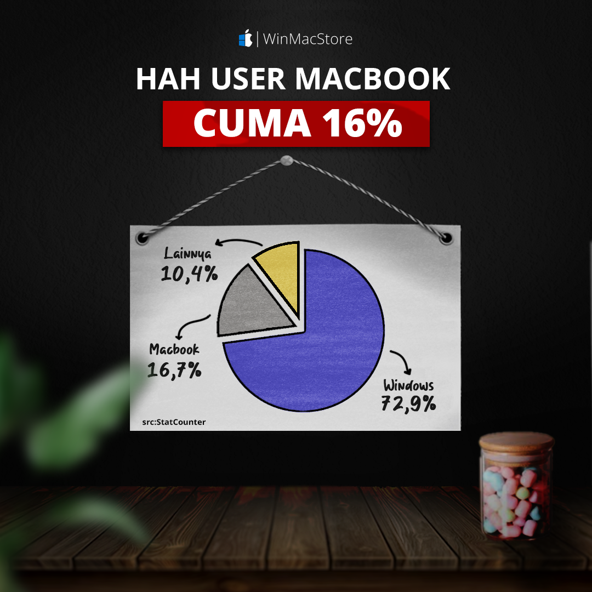
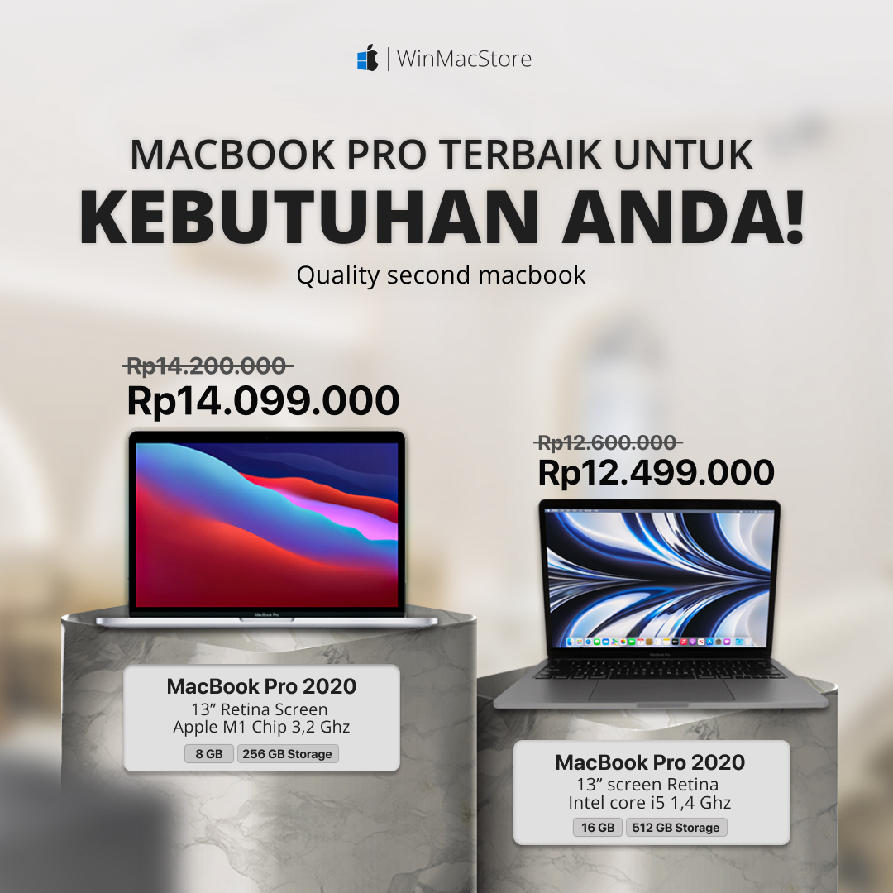
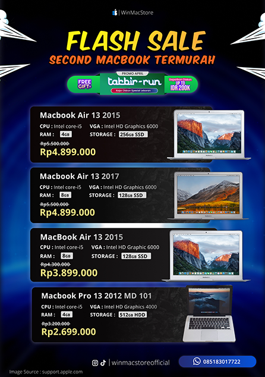
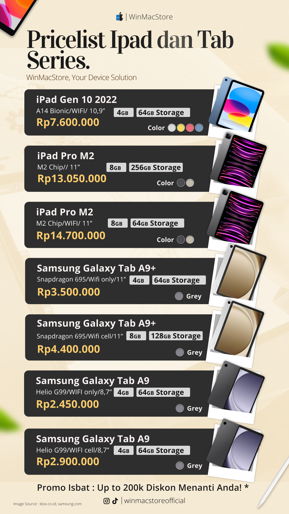

Professional
Daftar proyek dan kontribusi selama pengalaman kerja dan magang.
Educational Internship Students
Content Production in WinMacStore
Informasi Interaktif
Instagram Reels

Feed Instagram
Konten Visual

Feed Instagram
Konten Visual

Poster Penjualan
Materi Promosi
